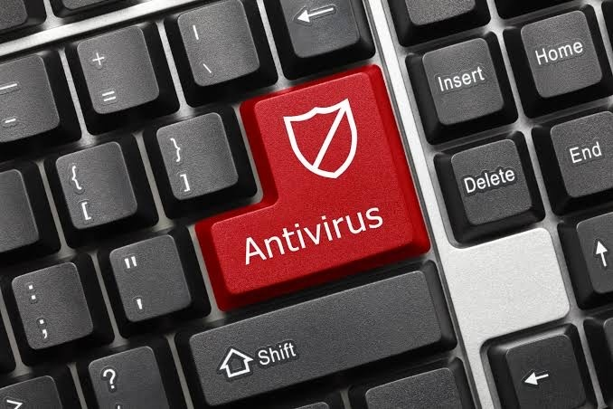

Cyber Security: The Ultimate Guide for the Digital World
Introduction
The internet, a boundless realm of information and connection, also harbors a dark underbelly: viruses, malware, and spam. These digital threats constantly evolve, seeking vulnerabilities in our systems and data. Understanding these threats and employing the right defenses is crucial for navigating the online world safely.
Viruses

Viruses, the oldest and perhaps most well-known digital threat, are self-replicating programs that attach themselves to other files. They spread by infecting healthy files, often through email attachments or infected downloads. Once activated, they can cause a range of problems, from data corruption to system crashes. Think of them as the common cold of the digital world – annoying, but often treatable
- Example: A classic example is the "Melissa" virus from the late 1990s, which spread through infected Word documents sent via email.
- Application Tip: Practice safe email habits. Avoid opening attachments from unknown senders and always scan downloaded files with an antivirus program before execution.
Malware
Malware is a broader term encompassing any malicious software designed to damage, disrupt, or gain unauthorized access to a system. This includes viruses but also encompasses other nasty programs like:
| MALWARE TYPE | DESCRIPTION | INFECTION METHOD | KEY CONSEQUENCES |
|---|---|---|---|
| Trojans | Disguises as legitimate software; performs malicious actions after installation | Social engineering, and malicious downloads | Data theft, system control, further malware installation |
| Worms | Self-replicating; spreads across networks without file attachment; exploits flaws | Network vulnerabilities, and email | Network congestion, system crashes, and data loss |
| Ransomware | Encrypts files; demands ransom for decryption | Malicious downloads, phishing emails, and exploit kits | Data loss, financial losses, and business disruption |
| Spyware | Secretly monitors user activity; collects sensitive information | Malicious downloads, drive-by downloads, bundled | Identity theft, targeted advertising, and data breaches |
- Example: A trojan horse might appear as a free game download, but secretly installs spyware that tracks your online activity.
- Application Tip: Practice safe email habits. Avoid opening attachments from unknown senders and always scan downloaded files with an antivirus program before execution.
Spam
Spam, or unsolicited bulk email, is less directly damaging than viruses or malware, but it can be incredibly annoying and even dangerous.Spam emails often contain phishing links, leading to malware infections or attempts to steal personal information.
- Example: An email claiming you've won a lottery you never entered, or a message urging you to click a link to update your bank account details.
- Application Tip: Be wary of emails from unknown senders and never click links or open attachments from suspicious sources. Use a spam filter to block unwanted emails.
Antivirus Software
Antivirus software is your essential tool in combating these digital threats. These programs scan your system for malware, remove infections, and provide real-time protection against new threats. They work by comparing files against a database of known malware signatures and using heuristics (behavioral analysis) to identify potentially malicious activity.
- Example: Popular antivirus programs include Norton, McAfee, Bitdefender, and Avast.
- Application Tip: Choose a reputable antivirus program and keep it updated with the latest virus definitions. Regularly scan your system and be aware of its features, such as real-time protection and firewall capabilities.
How To Protect Your Computer From Viruses
Conclusion
The digital landscape is constantly evolving, with new threats emerging regularly. Staying informed, practicing safe computing habits, and using antivirus software are crucial steps in protecting yourself and your data from the dangers lurking online.